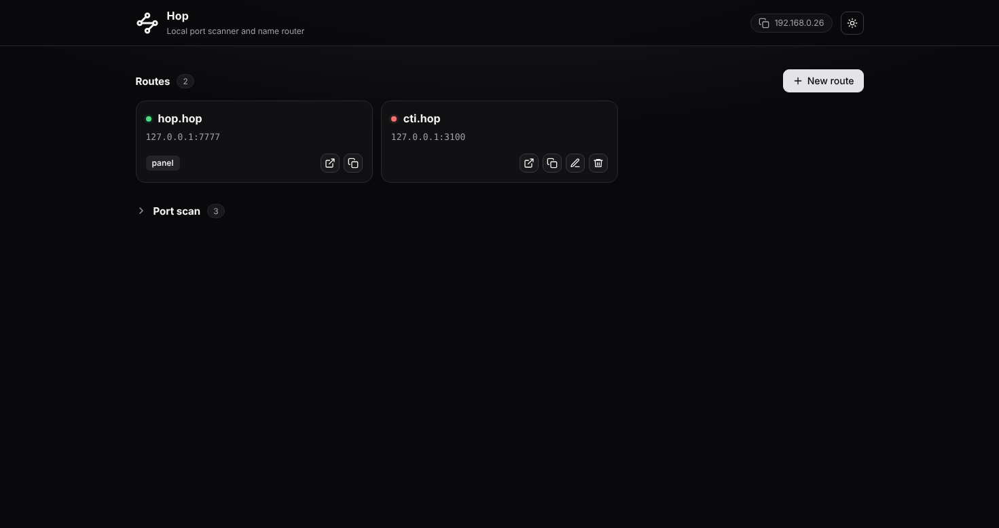

Stop memorizing port numbers.
Hop scans your machine for open ports and gives them memorable names. Type cti.hop in your browser and land on localhost:3100.
Features
6Local development usually means juggling a pile of port numbers. Hop keeps them straight so you don't have to.
Smart port scanner
Scan your machine, or your local network. A quick HTTP probe identifies each result, so you see page titles and server names instead of bare numbers.
Memorable names
Click Name it next to any result. cti.hop opens localhost:3100. The control panel itself lives at hop.hop.
WebSocket passthrough
The proxy passes WebSocket traffic through, so hot reload (HMR) keeps working with Vite, Next.js and friends.
Polite to your hosts file
Hop only edits its own clearly marked block and leaves the rest untouched. Names ending in .localhost need no changes at all.
Windows, macOS, Linux
One tool, three platforms. No setup wizard, no daemon to configure.
No dependencies
Built on the Python standard library only. Python 3.9 or newer is all you need.
How it works
Two steps, and you never look at a port number again.
Scan
Scan the local machine (and optionally your local network) to find open ports. Each one is identified with a quick HTTP probe.
Name
Name the ports you care about. Typing cti.hop in the browser opens localhost:3100.

Install
Requires Python 3.9 or newer.
-
Get the code$
git clone https://github.com/aardaakpinar/hop.git && cd hop -
Run itdirectly from source$
sudo python3 -m hop -
Or install itwith pip$
pip install . && sudo hop
Once Hop is running, open the address it prints (normally http://hop.hop), scan a port range, and click Name it.
Command-line options
Everything has a sensible default. Tweak only what you need.
| Option | Description |
|---|---|
| --tld xyz | Default suffix (cti becomes cti.xyz) |
| --panel name | Panel address, served at <name>.<tld> |
| --ui-port N / --proxy-port N | Panel port (default 7777) and proxy port (default 80, then 8080) |
| --config-dir, --hosts-file | Where routes are stored and which hosts file to edit |
| --no-browser | Do not open the browser on start |
| -v, --verbose | Verbose logging |
| --version | Print the version and exit |